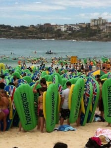
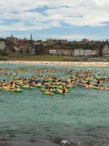

Mr Battlescar chilling out in the van on Queen Elizabeth Drive, 26/1/14
Well we got down to the beach at around 12.15pm and discovered that the thong challenge was about to begin.
We stopped to watch. The water conditions were perfect for supporting 2000 or so participants to float out on their thong to try and break the world record. It was impressive to see how orderly these thongers were in the water and on the sand.

Participants patiently waiting to be called to head into the water
Apparently the world record was not beaten however and Bondi only got to second place. Cottesloe retained the world record for the highest number of people in the water on giant havaianas – only by 23 thongers!

Thongers line up in the water in a very orderly fashion
Just goes to show, that for all the hype and fame surrounding Bondi, more people participated in this Australia Day event in Cottesloe than they did in Bondi. I wonder what that says?
]]>